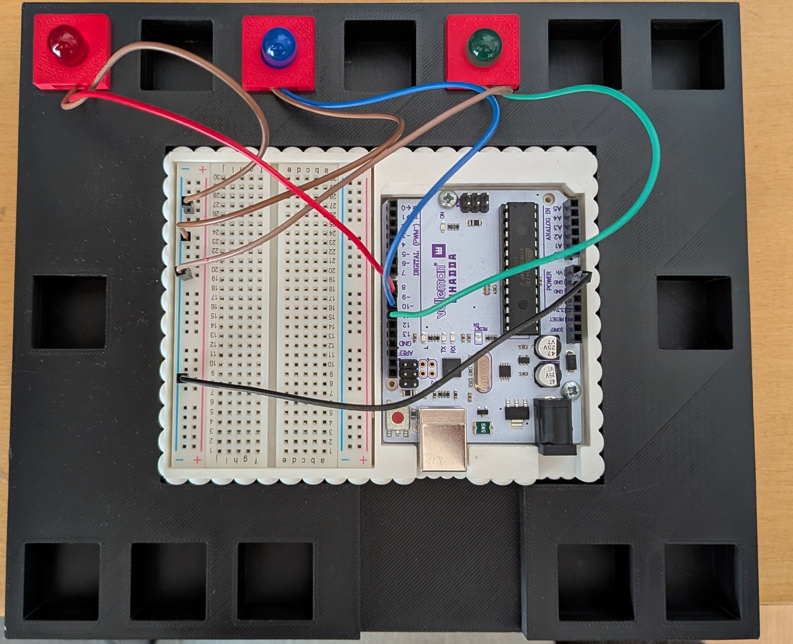

Les broches à utiliser
Branchez une LED par personnage (4 au maximum), sur les broches indiquées par votre professeur :
| LED | Broche de l'Arduino | Personnage (à compléter) |
|---|
Dans le bloc « 💡 allumer la LED broche … », choisissez le numéro de broche où votre LED est branchée.
Le schéma

- Un fil de couleur relie la broche de l'Arduino à la patte longue (+) de la LED.
- La patte courte (−) de chaque LED rejoint le rail − (bleu) de la breadboard.
- Un seul fil noir relie le rail − à une broche GND de l'Arduino : c'est la masse commune.
- Chaque LED a sa résistance de 220 Ω (déjà intégrée si vous utilisez les modules LED de la classe).
Le signe ~ à côté d'un numéro (3, 5, 6, 9, 10, 11) veut dire que la broche peut aussi régler la luminosité : utile au niveau 2.
Le montage réel

Sécurité
⚠️ Ne branchez jamais rien sur les broches 0 et 1 : elles servent au câble USB. L'outil les refuse.
- On câble câble USB débranché, puis on fait vérifier le montage par le professeur.
- Fin de séance : Tout éteindre → Déconnecter → débrancher le câble USB.
- Si le câble est débranché ou la page fermée, la carte éteint toutes les LED d'elle-même en moins de 3 secondes.